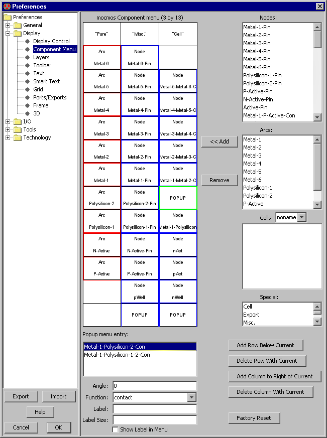

|
The component menu shows the nodes and arcs of the current technology.
The popup menu at the top lets you change the current technology and see its nodes and arcs.
In the component menu, nodes have a blue outline and arcs have a red outline.
To place a node in the current cell, click on its entry and then click again in the cell to place the node.
If you type "," or "." before clicking to place the node, then the rotation of the placed node changes.
To select a default arc for wiring, click on its entry (note that the default arc has a heavier red outline).
Some node entries in the component menu have multiple nodes in them, as indicated by a black arrow
in the lower-right corner.
Clicking on the arrow shows a menu of possible nodes to create.
Once selected, that node becomes the default for the menu entry.
Special component menu entries with text in them are provided for special functions:
|  |
The layout of the component menu is controlled by the Component Menu Preferences
(in menu File / Preferences..., "Display" section, "Component Menu" tab).
The menu is shown on the left, and the possible entries (Nodes, Arcs, Cells, and Special) are on the right.
To change a menu entry, select it (the selected entry is highlighted in green),
and choose either "Remove" to empty that entry or "<< Add" to add the selected Node,
Arc, Cell, or Special to the entry.
Adding multiple nodes to a menu entry allows that entry to have a popup menu to select among the nodes.

The structure of the menu can be altered with the buttons in the lower-right.
Use "Add Row Below Current" to add a new row below the selected entry.
Use "Delete Row With Current" to delete the row that includes the selected entry.
Use "Add Column to Right of Current" to add a new column to the right of the selected entry.
Use "Delete Column With Current" to delete the column with the selected entry.
When a menu entry with a node is selected, the fields in the lower-left let you add information
to that node.
- "Angle" indicates the angle that the node will be placed.
For example, if you want a transistor node to appear and be placed with 90-degree rotation,
set this field to 90.
- "Function" indicates the function of the node.
This information is used for grouping like-nodes and scaling them together.
- "Label" is optional text that will appear in the menu entry.